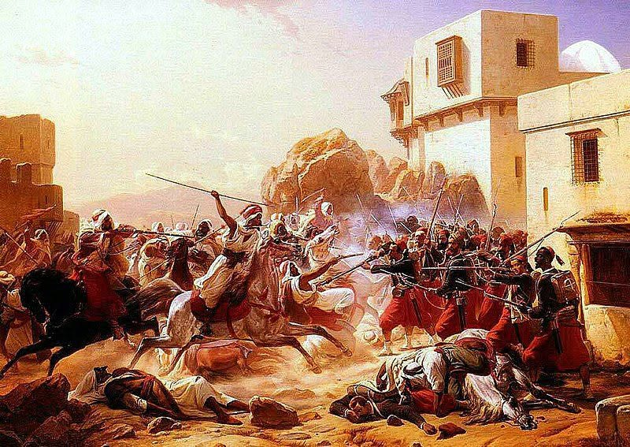

Laghouat — 4 décembre 1852
Élégie pour une cité meurtrie
Dans le grand livre du désert,
Il existe une page que le temps ne froisse pas.
On dit qu’elle fut écrite un 4 décembre,
Quand Laghouat devint à la fois blessure
Et constellation.
On raconte qu’en ce lointain 4 décembre,
Le désert retint son souffle,
Que l’horizon se plia en deux
Pour écouter le destin s’abattre sur Laghouat.
Laghouat pleure encore dans le silence du temps,
Ville d’oasis où la paix cherchait son sable,
Jusqu’à ce jour obscur, implacable,
Où l’aube se leva sur un ciel brûlant.
La ville se leva ce jour-là
Comme un vieux poème gravé dans la roche,
Un poème que ni vent, ni fracas, ni ombre
Ne purent arracher à la terre.
Ce ne furent pas seulement des hommes
Qui descendirent vers ses portes :
C’était une tempête de fer,
Un orage sans pluie,
Une nuit venue en plein midi.
Ce 4 décembre, la brise était lourde,
Les maisons tremblaient, les cœurs s’entendaient,
Et l’histoire retint, comme un secret,
Un souffle toxique que nul vent ne sourde.
Son peuple, tel un cercle de flammes douces,
Entoura la cité pour la garder vivante.
Et même lorsque la tempête tomba du ciel
Avec ses astres obscurs,
Laghouat garda le souffle clair
Que l’on trouve au cœur des oasis.
Mais la ville, frêle et vaste à la fois,
Se redressa comme un cèdre solitaire
Face au vent chargé d’ombre.
Ses enfants devinrent les racines,
Ses anciens devinrent la mémoire,
Et son sable devint armure.
Les familles, les enfants, les anciens unis,
Debout dans la poussière de leur terre aimée,
Affrontèrent l’ombre déchaînée
D’une violence qui défit l’infini.
La mémoire raconte :
Les murs devenaient des prières,
Les ruelles, des veines de courage,
Et chaque pas, une graine d’éternité.
Alors commença le combat dont parlent les dunes.
Un combat où l’on ne brandit pas seulement des armes,
Mais des cœurs ardents,
Des serments plus lourds que les murailles,
La certitude d’exister
Même quand tout veut vous effacer.
La ville devint un cri qu’on essaie d’effacer,
Un cri qu’aucune pierre n’a pu taire :
Celui d’un peuple digne et solidaire
Dont la lumière refuse de s’éteindre ou de plier.
Les siècles n’ont pas effacé ce chant.
Il s’élève encore,
Mêlant l’épopée de ceux qui résistèrent,
La mémoire de ceux qui veillent,
Et les symboles tissés par la lumière.
Le ciel, dit-on, resta témoin.
Il vit la lumière s’étrangler un instant,
Puis renaître dans un souffle clair :
Celui d’un peuple refusant le silence,
Celui d’un nom refusant l’oubli.
Et l’on raconte, dans les veillées tranquilles,
Que malgré les ténèbres, malgré la douleur,
Laghouat enfanta une force intérieure,
Un chant profond, inaltérable et fragile.
Laghouat n’est plus seulement une ville :
C’est une étoile plantée dans le désert,
Un nom que le vent porte avec respect,
Une vérité que l’histoire ne peut diluer.
Laghouat tomba, mais jamais entièrement.
Elle se cassa en mille éclats
Comme un miroir sacré,
Et chaque éclat garda la vérité
Pour les siècles qui suivirent.
Aujourd’hui encore, sous le vaste ciel d’or,
La mémoire veille, humble et sacrée :
Elle porte les noms jamais oubliés
De ceux que l’histoire n’emporte pas dehors.
Et depuis ce jour,
Quand le vent traverse les ruelles anciennes,
Il porte une légende :
Non celle d’une ville défaite,
Mais d’une cité qui devint symbole,
D’un peuple que le temps appelle encore
« Les veilleurs de l’aube ».
Laghouat, cité blessée mais fière,
Tu changes les larmes en leçons de lumière,
Et dans le cœur de ton désert immense
Vibre la preuve que l’espoir avance.
Et sur les sables dorés,
Le murmure du passé dit encore :
« Là où la douleur a tenté de s’abattre,
Une éternité est née. »
Car dans la grande bibliothèque du désert,
Une page brille plus que les autres :
Celle où le soleil écrit en lettres d’or :
« Ici, Laghouat fit de la douleur un héritage,
Et de l’héritage une éternité. »
Niels Simonsen, Le dernier combat (bataille de Laghouat, 1852).
Djamel Metref
At Yenni le 4 décembre 2025

← Tous les poèmes